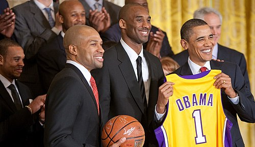

Milli Basketbol Assosiasiyası- Amerika Birləşmiş Ştatlarının 30 komandadan ibarət olan peşəkar basketbol liqasıdır. Liqanın əsası 6 iyun 1946-cı ildə Nyu-York şəhərində "Basketboll Assosiation of America" (BAA) (Amerika Basketbol Assosiasiyası) olaraq qoyulmuşdur. Liqa 1949-cu ildə indiki adını almışdır. Oyunları Amerikada ESPN və TNT, Türkiyədə TV8, Azərbaycanda isə CBC Sport kanalları yayımlayır. NBA loqosunun üzərində Los-Anceles Leykersli oyunçu Cerri Vestin süjeti canlanır.
